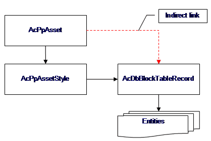
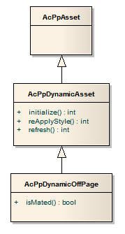

An asset behaves like a block reference, except that an asset references a project-wide style definition, instead of a local block definition.
One asset may look like a pump, another could appear as a tank.
As an individual entity, an asset contains little geometric information. Position (Position, getPosition) and scale information are the only geometric values held within the asset entity. Symbol geometry is obtained through a style reference. An asset has a style ID (StyleID, getStyleID) that is used to obtain the asset style (AssetStyle, AcPpAssetStyle).
The diagram below illustrates the indirect link of an asset’s block table record (BlockTableRecord, blockTableRecord). Formal hard-pointer links run through AcPpAssetStyle.

The block referenced by the asset should be treated as read-only. To change the appearance of an asset, developers can change the style (AssetStyle, AcPpAssetStyle).
Equipment is typically placed on a drawing before lines and inline instruments. P&ID equipment includes pumps, compressors, blowers, heat exchangers, tanks, vessels, furnaces, mechanical drivers, mixing equipment, and other miscellaneous items.
AcPpAsset is an entity type used for almost all assets (tanks, pumps, and so on) that can be placed from the P&ID tool palettes onto a drawing.
AutoCAD P&ID propagates changes automatically through the project, updating the information held in the block reference. In a manner similar to that of the anonymous blocks owned by dimension and hatch entities, the block table can provide useful information, but the block should not be updated directly.

off-page connector
An off-page connector is an asset (Asset, AcPpAsset). As a drawing entity, it behaves much like an end-line asset; however, it does not represent physical equipment.
Off-page Connectors are defined as assets so that they may be visually defined by a style definition, in the same manner that equipment assets are.
AcPpDynamicOffPage is attached to the end of a line in one drawing to indicate that the line continues in another drawing within the project. Two AcPpLineSegment objects in different drawings share the same record in the data cache. Thus, the project contains one logical pipe line.